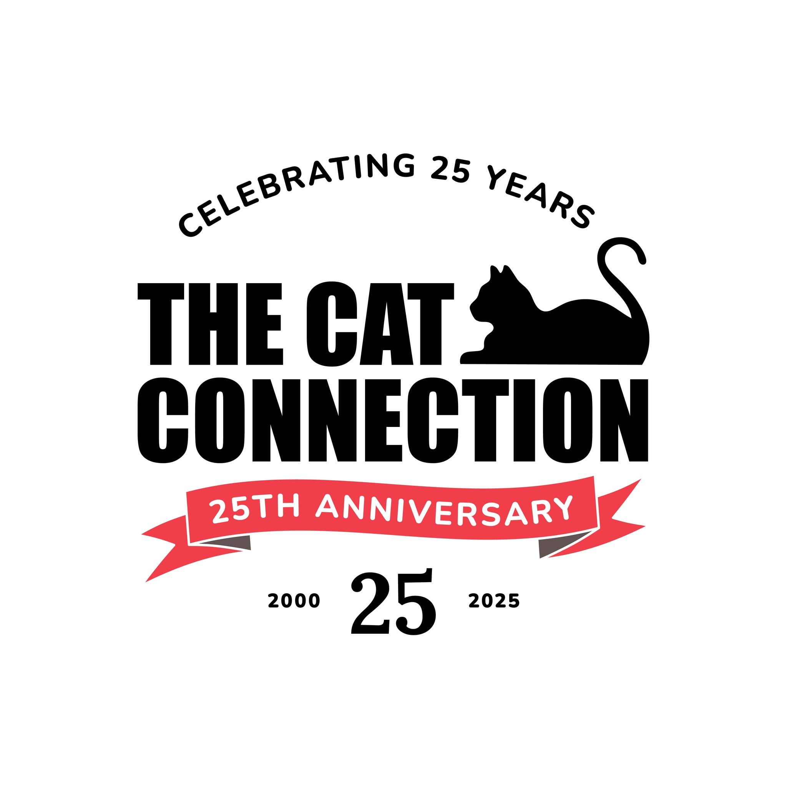
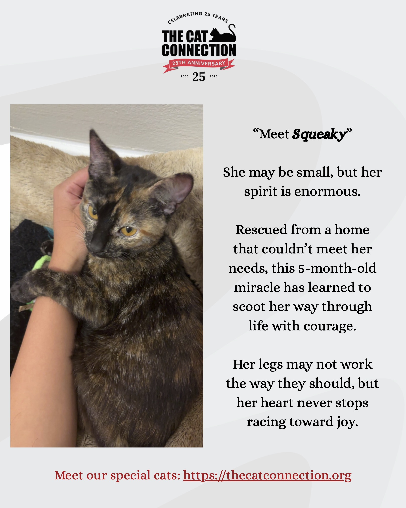
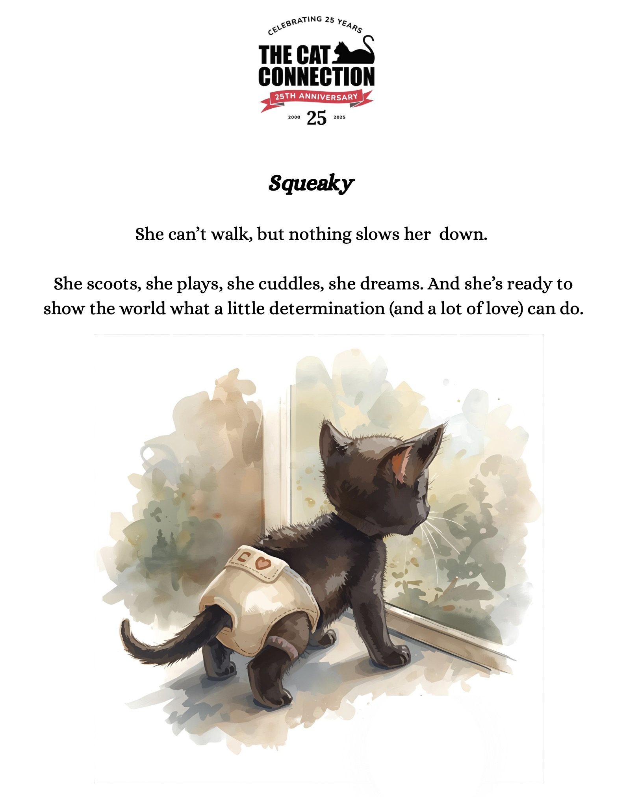
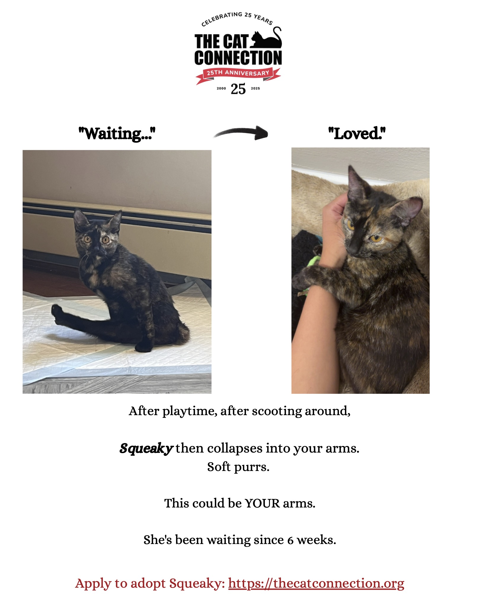

The Cat Connection is a Boston-based cat rescue celebrating its 25th anniversary. Like most nonprofits, their marketing was constrained by time, budget, and a heavy reliance on what felt true rather than what the data actually showed. They had years of adoption application data sitting unused, and a recurring problem common to rescues: their hardest-to-place cats (special needs, bonded pairs) were waiting longest, even though demand for personality-driven matches was strong. The gap was not in interest. It was in storytelling.
The work split into four phases.
The first phase was exploratory data analysis. I cleaned and structured years of adoption applications, then dug into what the applicant pool was actually telling us: who they were, where they were finding the rescue, what motivated them, and what language they used to describe why they wanted to adopt. The analysis surfaced patterns the team had not been working with, including a real and underserved demand for multiple-cat households, dominant motivational themes around love, companionship, and home, and a clear timing pattern showing when applications spiked across days, months, and hours.
The second phase was campaign concept development. Based on the analysis, I built three distinct storytelling concepts targeting different gaps in the data, each grounded in a specific applicant pattern rather than a hunch. We presented all three to the rescue's leadership in a formal proposal, and they approved the approach and chose a special-needs kitten as the pilot subject.
The third phase was content strategy and creation. I worked through the rescue's existing blog stories to identify what made narratives emotionally resonate, then helped develop three social posts using different formats (introduction, illustrated storytelling, and a before/after transformation). The visual contrast format was selected by the rescue's team as the launch piece. Alongside the creative, I developed a tiered hashtag strategy balancing brand-specific, local, category, broad engagement, and emotional tags.
The fourth phase was launch and measurement. The post went live on Instagram and Facebook with strategic timing pulled from the application data. Within the first 17 hours, both posts performed significantly above the rescue's typical content on every dimension that mattered, including reach, engagement rate, and link clicks to the adoption page. The Social Media Coordinator confirmed both posts performed well above their usual baseline.
Three storytelling concepts grounded in the application data. The Cat Connection team chose the before/after format for launch, where it significantly outperformed the rescue's typical content within the first 17 hours.


